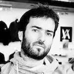

Closely linked to life science applications (medical imaging, *-omics data analysis), my research interests cover the fields of knowledge engineering (semantic web, linked data) and distributed systems (workflows, large scale computing infrastructures) to better i) query massive, distributed and heterogeneous datasets, as well as ii) produce few yet meaningfull data. I'm currently involved in the CrEDIBLE research project.
Since september 2014, I coordinate the SyMeTRIC project. SyMeTRIC is a french regional project in Systems Medicine, funded by the Pays de la Loire region. SyMeTRIC aims at building a common Systems Medicine computing infrastructure to accelerate the discovery and validation of biomarkers in the fields of oncology, transplantation, and chronic cardiovascular diseases.